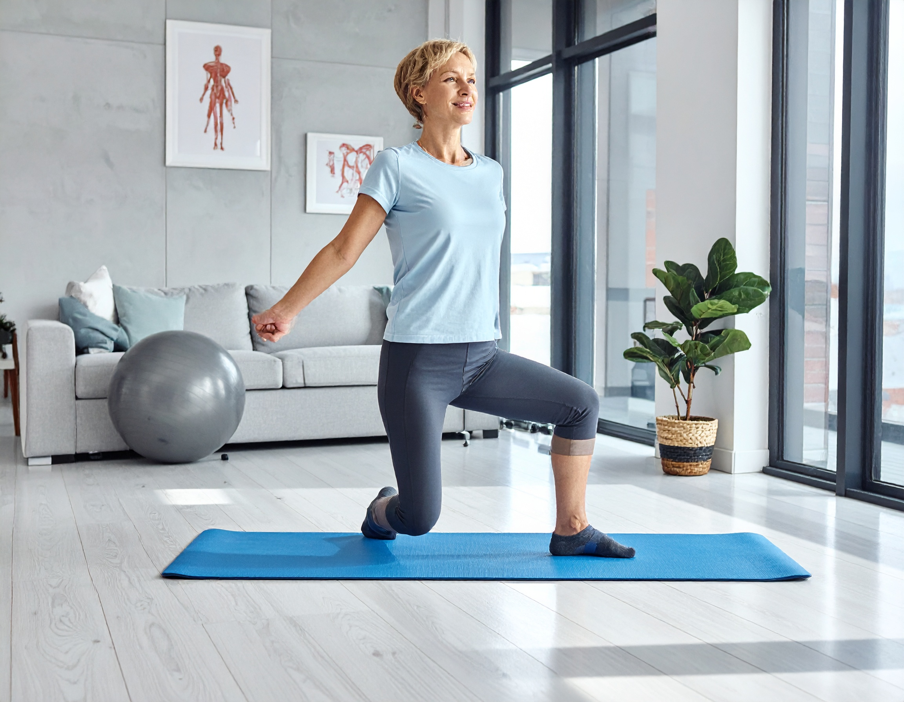

Descripción general
La Aplicación para fisioterapias es una plataforma web que cuenta con dos tipos de usuarios: fisioterapeutas y pacientes. Los fisioterapeutas pueden registrar a sus pacientes y asignarles ejercicios personalizados según sus necesidades de recuperación. Los pacientes, por su parte, pueden acceder a la plataforma para realizar las terapias programadas, visualizar su progreso y seguir su evolución de forma sencilla e interactiva.